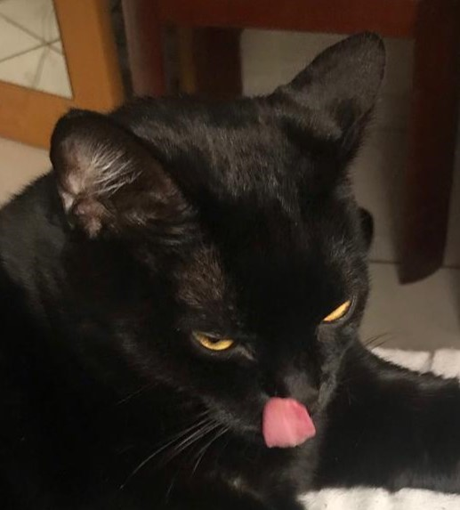

Os gatos pretos têm uma longa e intrigante história que remonta à antiguidade, onde foram reverenciados e temidos em diferentes culturas ao redor do mundo. Na mitologia egípcia, os gatos, incluindo os pretos, eram considerados sagrados e associados à deusa Bastet, a protetora do lar e da fertilidade. No entanto, a sorte atribuída aos gatos pretos tomou um rumo diferente na Europa durante a Idade Média, quando começaram a ser associados a crenças supersticiosas e bruxaria. Essa mudança de percepção resultou em uma série de mitos negativos, como a ideia de que os gatos pretos eram familiares de bruxas ou que cruzar o caminho de um trazia azar. Durante os julgamentos das bruxas, muitos gatos, especialmente os pretos, foram perseguidos e até mesmo mortos, perpetuando a ideia de que eram criaturas malignas. Essa superstição persistiu ao longo dos séculos, influenciando a cultura popular e até mesmo afetando a adoção de gatos pretos em alguns lugares. No entanto, à medida que o tempo avançou e as sociedades evoluíram, a compreensão sobre os gatos pretos começou a mudar. Muitas pessoas hoje reconhecem a beleza e a personalidade única desses felinos, desafiando as antigas superstições. Atualmente, os gatos pretos são apreciados como companheiros amorosos em lares ao redor do mundo, e a narrativa negativa que os cercava está gradualmente cedendo espaço a uma apreciação mais positiva de sua presença na história e na cultura. Este contexto histórico oferece uma perspectiva fascinante sobre como as percepções dos gatos pretos evoluíram ao longo do tempo, destacando a importância de questionar e reavaliar crenças culturais.
